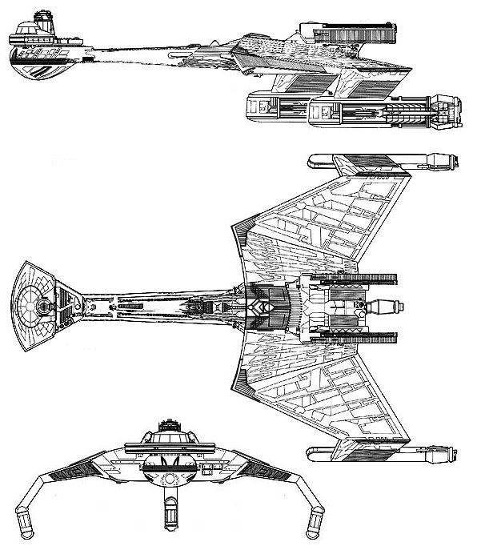

D-7M K'tinga-class Heavy Cruiser (KE)

Battle Stats
Engines and Superstructure
Total Power Units - 52 (Warp Engines - 2x20, Impulse Engines - 12)
MPR - 4/1
Superstructure - 20
Maximum Warp - 2
Industry Points to Build - 7
Beam Weapons (Disruptors)
Max Power - 7
Firing Chart - U
Arcs - 2F/P, 1F, 2F/S, 1A
Bonuses - +3(1-7) +2(8-15) +1(16-20)
Missile Weapons (Photon Torpedoes)
Power to Arm - 2
Damage - 18
Firing Chart - Q
Arcs - 1F, 1A
Deflector Shields
Max Shield Power - 12
SPR - 1/2